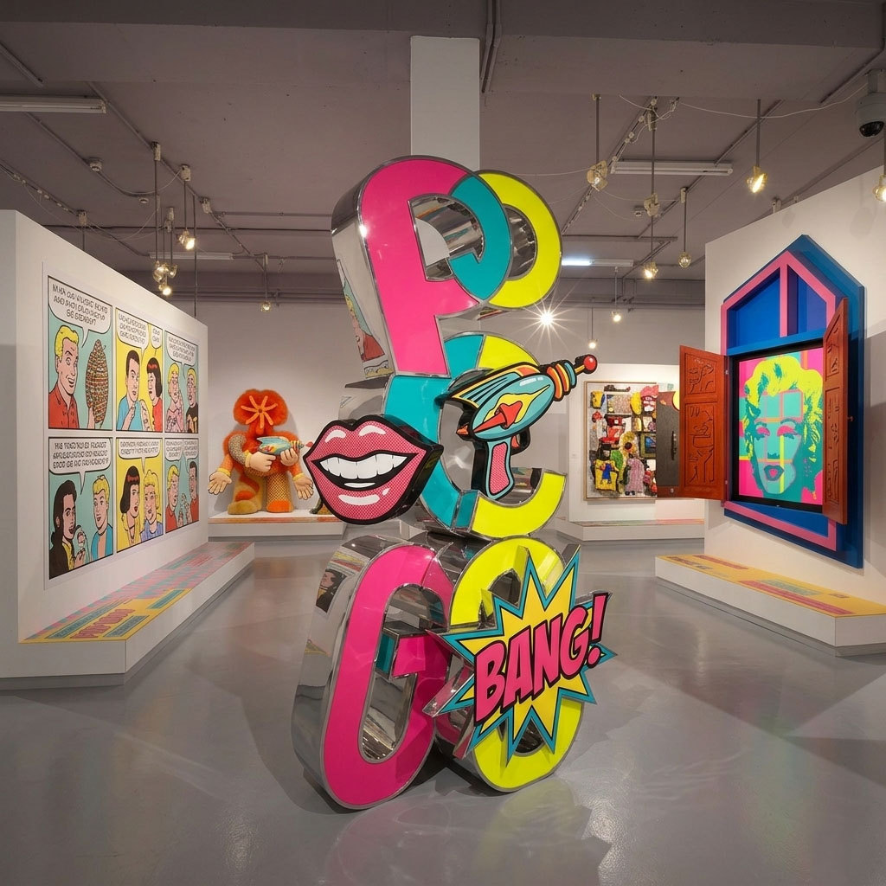

Pop-Art Exhibit Companion
Museum Exhibit Companion transforms a Pop Art exhibition into an accessible, layered learning experience reducing information overload while giving children, everyday visitors, and experts content tailored to their level. It serves museum audiences by offering quick highlights, deeper insights, and optional expert material in a lightweight, easy-to-navigate format that enhances engagement without disrupting the visit.

The Problem & Our Solution
The Problem
Museum exhibitions, especially visually dense ones like Pop Art often overwhelm visitors with too much information in a limited time and space. Audiences with different levels of knowledge (children, casual visitors, and experts) struggle to find content that matches their needs, while important practical information like navigation, accessibility, and planning can be hard to access without disrupting the experience.
Our Solution
Our Museum Exhibit Companion will provide a lightweight, digital layer that organises content into clear, accessible levels from quick highlights to in-depth expert insights allowing visitors to engage at their own pace. It seamlessly integrates interpretive content with practical visit tools, creating a cohesive experience that supports learning, improves flow, and feels like a natural extension of the exhibition.
Why It Works

Layered content done right
Instead of overwhelming visitors, the companion separates information into clear levels (kids, general, expert), so each person only sees what they need—making learning feel natural rather than overloaded.

Seamless in-gallery experience
By creating lightweight pages and offline-friendly design our interface works reliably inside the museum, avoiding the user frustration many digital companions have with poor connectivity.

Integrated, not distracting
Visit planning (tickets, accessibility, times) is easy to access without interrupting the artwork experience, so the companion supports the exhibition instead of competing with it.